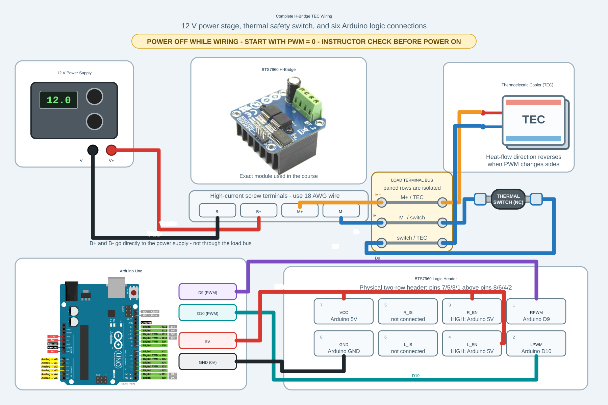

Module 3 Assignment: Manual TEC Heat/Cool And First Python GUI¶
Purpose¶
Module 3 connects measurement to thermal actuation. In Module 2 you measured temperature, verified the H-bridge signals, and used a small motor to make PWM magnitude and direction immediately visible. In Module 3 you replace the motor with the TEC and thermal switch, operate the TEC at low power, record heating and cooling traces, and begin treating the Python GUI as an editable part of the instrument.
This is still not feedback control. You are learning how to drive the actuator, how to recognize safe behavior, and how the software interface should represent the state of the hardware.
Class-Session Boundary¶
Module 2 introduced the H-bridge, external power supply, brushed DC motor, and stripping and tinning 18 AWG wire. Module 3 begins the Class 4 or 5 TEC-wiring session. Do not wire or energize the TEC and thermal switch until the instructor begins that session.
Theme¶
Manual TEC Heat/Cool And First Python GUI
Manual TEC direction and PWM, temperature traces, and a first small GUI modification.
Safety Boundary¶
Before TEC power is connected:
- PWM starts at zero.
- H-bridge inputs have been verified on the oscilloscope.
- Arduino ground, H-bridge ground, and oscilloscope ground are understood.
- The power supply current limit is set by the instructor.
- The thermal safety cutoff is identified.
- The Module 2 motor-first H-bridge test has been completed with the TEC disconnected.
- All wiring in the power-supply, H-bridge, TEC, and thermal-switch current path is 18 AWG stranded copper wire.
- Female spade connectors have been crimped onto both thermal-switch wires, tug-tested, and checked for continuity.
Stop immediately if the temperature moves in the wrong direction, the TEC or driver heats unexpectedly, the power supply current is too high, or the serial trace disappears.
Before Class¶
- Review your Module 2 thermistor conversion notes.
- Review which Arduino pins drive the H-bridge on the class board.
- Open the Python GUI or strip-chart code in VS Code and identify:
- imports,
- the serial parser,
- the plot update function,
- the place where labels or displayed values are set.
- Write down one small GUI change you would like to make.
Outside-Class Workload Budget¶
| Session | Work | Planned time |
|---|---|---|
| S5 | Read this assignment; review the wiring, safety boundary, and prior thermistor code | 75 minutes |
| S5 | Inspect the Python strip-chart structure and prepare one proposed change | 45 minutes |
| S5 | Total associated with S5 | 2 hours |
| S6 | Develop or revise the display-only GUI using the provided prompt | 120 minutes |
| S6 | Update run instructions and record unresolved questions | 30 minutes |
| S6 | Total associated with S6 | 2 hours 30 minutes |
| S7 | Develop and test the GUI controls and serial-command code without TEC power | 120 minutes |
| S7 | Organize the repository, README, evidence, and C3 receipt | 60 minutes |
| S7 | Total associated with S7 | 3 hours |
Stop when the planned time is exhausted. Preserve the current working state and bring a precise description of the blocker to class; do not trade away safety or understanding to finish an AI-generated feature.
Pre-Class Questions¶
- Why should the H-bridge be checked with the oscilloscope before the TEC power supply is turned on?
- What does PWM control in this experiment?
- Why is heat/cool direction a physical question, not only a software label?
- What part of the GUI code do you expect to modify first?
What You Will Do¶
- Rebuild or inspect the thermistor measurement circuit.
- Verify the H-bridge input signals again with TEC power off.
- Wire the TEC and thermal switch with 18 AWG stranded copper wire.
- Crimp female spade connectors onto the two thermal-switch wires.
- Run the manual trim-pot or manual PWM TEC sketch.
- Record low-power heating and cooling traces.
- Run the Python strip chart while the TEC is manually driven.
- Add Python GUI controls for PWM and heat/cool direction.
- Write an Arduino sketch that receives PWM and heat/cool commands from Python.
- Clean up your Arduino, Python, and notes into a readable project checkpoint.
Part 1: Pre-Power Checklist¶
Before turning on TEC power, fill in this checklist in your module notes.
| Item | Value Or Observation |
|---|---|
| Arduino board and port | |
| Thermistor pin | |
| H-bridge heat pin | |
| H-bridge cool pin | |
| PWM starts at zero? | |
| Module 2 motor test completed with TEC disconnected? | |
| High-current leads are 18 AWG? | |
| Both female spade crimps tug-tested and checked for continuity? | |
| Power supply voltage | |
| Power supply current limit | |
| Thermal cutoff identified? | |
| Instructor check complete? |
Part 2: Manual TEC Sketch¶
Use or inspect the instructor reference sketch:
arduino/tec_manual_trim_pot/tec_manual_trim_pot.ino
The essential behavior is:
trim pot -> averaged analog input -> PWM command -> H-bridge -> TEC
thermistor -> 100-1000 raw ADC readings -> average voltage -> temperature -> serial line -> laptop plot
If you write your own version, keep it simple. Do not add feedback control yet. Every temperature value must be calculated only after averaging between 100 and 1000 raw thermistor-voltage measurements, as established in Module 2.
This sketch is intentionally not polished. Before improving its structure, make sure you can explain the measurement path, the PWM command path, and the heat/cool direction path.
Part 3: Oscilloscope Verification¶
With TEC power off, check the H-bridge input signals.
Record a table:
| Command | Pin 9 Observation | Pin 10 Observation | Expected TEC Direction |
|---|---|---|---|
| PWM = 0 | off | ||
| heat, low PWM | heat | ||
| cool, low PWM | cool |
Only one H-bridge side should be active at a time. The PWM duty cycle should match the command from the trim pot or manual setting.
Part 4: Low-Power Heating And Cooling¶
This part begins in Class 4 or 5. Do not begin unless the instructor has started the TEC-wiring session.
After completing the motor-first test in Module 2, turn off actuator power and replace
the motor with the TEC high-current circuit. Use 18 AWG stranded copper for the
power-supply-to-H-bridge wiring, M+/M- wiring, and both sides of the thermal
switch. Make the TEC-side connections on the isolated paired positions of the
terminal bus; do not solder two wires together. The power-supply V+/V-
leads connect directly to H-bridge B+/B- and do not go through the bus.
After instructor approval, connect TEC power.

Open the complete Arduino, H-bridge, TEC, and thermal-switch wiring diagram full size
{kind=link}
Download the editable Adobe Illustrator source
Physical Wiring On The Class Apparatus¶
The complete diagram above shows the electrical relationships. On the actual class apparatus, the motor, TEC, and thermal-switch leads terminate on the barrier-style terminal bus visible in the labeled photograph below. Wires that need to be electrically joined are secured on the same paired bus position; they are not soldered together. Each pair is isolated from the other pairs, so this is not a single common electrical bus.
The photograph shows these three paired connections:
- H-bridge
M+paired with one thermal-switch lead, - the other thermal-switch lead paired with
TEC+, and TEC-paired with H-bridgeM-.
Thus, the photographed apparatus places the normally closed thermal switch in
series in the M+ path. This is functionally equivalent to placing it in the
M- path as shown in the electrical diagram: opening the switch interrupts the
same series current path and removes power from the TEC. When wiring the class
apparatus, follow the photograph and the labels on your setup. Use female spade
connectors at the thermal switch. The power-supply V+ and V- leads still go
directly to H-bridge B+ and B-; they do not terminate on this bus.

Open the labeled class-apparatus photograph full size
Crimp The Thermal-Switch Spade Connectors¶
- Prepare two 18 AWG stranded copper leads for the two sides of the thermal switch.
- Strip only enough insulation for the conductor to fit fully inside the crimp barrel. The strands captured inside the crimp barrel must remain untinned.
- Crimp a female spade connector onto each lead using the correctly sized crimp tool position.
- Tug-test each crimp gently.
- Use a multimeter to verify continuity through each lead and through the closed thermal switch.
- Ask the instructor to inspect the wire gauge, crimped spades, thermal-switch placement, polarity, and power-supply current limit.
Before making the crimps, review these technique illustrations:
- How to crimp an electrical connector: illustrated instructions
- How to crimp quick disconnects (spade terminals): YouTube demonstration
Do not enable actuator power until the instructor approves the completed wiring.
- Start with PWM at zero.
- Increase PWM slowly to a low value.
- Watch the temperature trace.
- Record which command heats the thermistor and which command cools it.
- Return PWM to zero between trials.
Take at least one short heating trace and one short cooling trace. Do not chase a target temperature; this is open-loop manual actuation.
Part 5: Python Display-Only Strip Chart¶
Write a Python program that reads the Arduino serial output and displays two live strip charts:
- temperature in Celsius versus time,
- PWM value versus time.
This first Python version is display-only. It must not send commands to the Arduino.
The Arduino serial lines look like this:
Temperature (C): 27.73, Time (s): 645.06, PWM: 120, Heat/Cool: 1
Your strip chart should let you set, near the top of the Python file:
- the serial port and baud rate,
- the visible strip-chart window duration,
- the plot update interval,
- the temperature-axis limits,
- the PWM-axis limits.
You may work with an AI agent to produce the first version. A good prompt is:
I am writing a Python display-only strip chart for a physics instrumentation lab.
Write a simple Python program using PySide6 and pyqtgraph that reads Arduino
serial data and displays two live strip charts:
1. temperature in Celsius versus time
2. PWM value versus time
The program must not send commands to the Arduino.
Serial lines from the Arduino look like this:
Temperature (C): 27.73, Time (s): 645.06, PWM: 120, Heat/Cool: 1
Requirements:
- Use pyserial to read from a serial port.
- Let me set the serial port and baud rate near the top of the file.
- Plot only the most recent N seconds of data, where N is a variable called
window_seconds.
- Let me set the plot update interval in milliseconds.
- Let me set y-axis limits for temperature and PWM near the top of the file.
- Parse temperature_C, time_s, PWM, and Heat/Cool from each serial line.
- Ignore startup/status lines that do not match the data format.
- Use Celsius only.
- Keep the code simple enough for an advanced physics student who is new to
Python to understand.
- Include comments explaining imports, serial reading, parsing, data storage,
and plot updating.
After the code runs, identify the parts of the program that read serial data, parse one line, store recent data, and update the plots.
Part 6: Add Python Manual Controls¶
Modify the display-only Python strip chart so it has manual controls:
- a heat/cool switch,
- a PWM slider from
0to255, - a PWM text box.
The slider and text box should stay synchronized. If you move the slider, the
text box should show the new PWM value. If you type a number in the text box,
the slider should move to that value. Clamp invalid PWM values to the range
0 to 255.
When the controls change, the Python program should send one serial command to the Arduino:
SET PWM 120 DIR HEAT
SET PWM 45 DIR COOL
Keep the two strip charts from Part 5. The PWM plot should show heating in red and cooling in blue.
Use this prompt to ask your AI agent for help:
Modify my existing PySide6 + pyqtgraph display-only strip chart.
Add manual controls:
1. a heat/cool switch,
2. a PWM slider from 0 to 255,
3. a PWM text box.
The PWM slider and PWM text box must stay synchronized:
- moving the slider updates the text box,
- typing a number in the text box updates the slider,
- invalid values are clamped to 0 through 255.
When the PWM or heat/cool setting changes, send a text command to the Arduino
serial port in this format:
SET PWM 120 DIR HEAT
SET PWM 45 DIR COOL
Keep the existing temperature and PWM strip charts. Plot PWM heating samples in
red and PWM cooling samples in blue. Do not implement feedback control. Use
Celsius only.
Include comments explaining how the GUI widgets, serial command sending, and
plot updates work.
At this stage, the old trim-pot Arduino sketch will not obey these commands. That is expected. The goal of this part is to build the Python interface and define the serial command format.
Part 7: Arduino Serial-Command Control Sketch¶
Write a new Arduino sketch descended from the manual trim-pot sketch. It should keep the thermistor measurement and H-bridge output behavior, but replace the trim pot and physical direction wire with commands from the Python GUI.
The new Arduino sketch should:
- read the thermistor divider on
A0and average between 100 and 1000 raw ADC measurements before converting the average voltage to temperature, - output PWM on pin
9for heat and pin10for cool, - start with PWM
0, - receive commands such as
SET PWM 120 DIR HEAT, - clamp PWM to the range
0to255, - keep printing the same measurement line used by the Python strip chart:
Temperature (C): 27.73, Time (s): 645.06, PWM: 120, Heat/Cool: 1
Use this prompt to ask your AI agent for help:
I have an Arduino sketch for a physics instrumentation lab. The old version
measures temperature from a thermistor on A0, reads a trim pot on A1 to choose
PWM, reads pin 11 to choose heat or cool, and drives an H-bridge with PWM on
pins 9 and 10.
Write a new Arduino sketch with clear comments explaining its lineage from the
trim-pot version.
Requirements:
- Keep thermistor temperature measurement on A0. Average between 100 and 1000
raw ADC measurements before converting the average voltage to temperature.
- Keep H-bridge outputs on pins 9 and 10.
- Remove the trim-pot input on A1.
- Remove the physical direction input on pin 11.
- Start safely with PWM = 0.
- Receive serial commands from Python in this format:
SET PWM 120 DIR HEAT
SET PWM 45 DIR COOL
- Clamp PWM values to 0 through 255.
- In HEAT mode, write PWM to pin 9 and 0 to pin 10.
- In COOL mode, write 0 to pin 9 and PWM to pin 10.
- Keep printing measurement lines in exactly this format:
Temperature (C): 27.73, Time (s): 645.06, PWM: 120, Heat/Cool: 1
- Use Heat/Cool = 1 for heat and Heat/Cool = 0 for cool.
- Do not add feedback control.
- Include comments explaining the serial command parser and safety startup.
With TEC power off, verify on the oscilloscope that Python commands change the Arduino outputs as expected. Only after that check may you repeat a low-power manual heat/cool test.
Part 8: Project Cleanup And GitHub Checkpoint¶
By the end of Module 3, you may have several Arduino sketches, Python files, AI-generated drafts, notes, screenshots, and data files. Before moving on, take time to organize the work so that another person, including your future self, can understand what you built.
Use the course Git, GitHub, VS Code, and AI workflow page as your reference for the minimal Git commands and documentation habits expected in this course.
Use the one private team repository supplied for the course; do not create a second project repository. Follow the workflow page to clone it with GitHub Desktop and open the repository folder in VS Code.
Organize the code and documentation you want to keep. By this point, the working part of the repository should resemble:
phys39-instrumentation/
README.md
.gitignore
requirements.txt
arduino/
thermistor_serial/
thermistor_serial.ino
tec_manual_control/
tec_manual_control.ino
tec_python_control/
tec_python_control.ino
python/
tec_display_strip_chart.py
tec_control_gui.py
models/
analysis/
docs/
module_notes/
wiring/
figures/
data/
You may customize this structure if it remains clear and consistent. Do not
create empty future data folders merely to fill out the diagram. Remember that
each Arduino sketch folder and its .ino file must have exactly the same name.
Use VS Code Explorer to create folders and files and to move earlier work into the repository. After moving code, compile and test the Arduino sketch and run the Python program from their new locations. Do not delete a known working copy until the moved version has passed the same test.
Write or revise README.md so it explains:
- what your project does,
- what hardware is connected to which Arduino pins,
- which Arduino sketch goes with which Python program,
- how to upload the Arduino sketch,
- how to run the Python program,
- one example serial line and what each field means,
- what Git commits you made to organize and preserve your work,
- what you tested yourself,
- what you still do not fully understand.
Use GitHub Desktop to make the checkpoint:
- Inspect every changed file and exclude temporary or duplicate drafts.
- Commit with the summary
Organize Module 3 TEC control project. - Push the commit to GitHub.
- Choose Repository > View on GitHub and verify that the new folders,
README.md, and latest commit appear in the private team repository.
Do not blindly commit everything in the folder. Look at git status first.
Temporary files, duplicate AI drafts, and large accidental data files should not
be included unless there is a reason to keep them.
In VS Code, use the file explorer to inspect your folder structure, edit your
Arduino sketches, edit your Python code, and preview your README.md. Use this
checkpoint to remove duplicate code and give files names that describe what they
actually do.
Also include a short AI use note in your README.md:
- Which parts of the code did AI help generate?
- Which parts did you modify yourself?
- Which parts did you test on real hardware?
- Which parts can you explain without looking at the AI transcript?
Collect Your C3 Evidence During Class¶
Module 3 spans S5-S7. Save evidence as each capability works; do not wait until the end and try to reconstruct which code produced which trace. Before the C3 demonstration, save:
- the signed pre-power checklist and final wiring record,
- the heat/cool oscilloscope table with TEC power off,
- one labeled low-power heating record and one labeled cooling record,
- a raw data file with units and acquisition metadata,
- screenshots of the display-only and control GUIs,
- the exact paired Arduino and Python versions used for the final test,
- a record of the over-temperature and invalid-command safety tests, and
- the organized repository README and AI-use note from Part 8.
Keep the module record in docs/module_notes/module_03_tec_gui.md. Put raw data
under data/module_03/, figures under docs/figures/module_03/, and the
authoritative programs under arduino/ and python/. Complete each row or
caption while the corresponding test is running.
C3 Evidence Record¶
This material supports C3, TEC Instrument And First Python
GUI, demonstrated
during S7 on Wednesday, September 23. The P1 check during S6 is a rehearsal:
show that Python reads real serial data, updates the display, and saves a
labeled file. It has no separate Moodle submission.
After the experimental evidence is complete, reserve about 60 minutes to check
paths, finish captions, commit, push, and prepare the C3 Team Checkoff Moodle
receipt. The receipt is due by 11:55 AM in S7 and must cite the exact pushed
commit. Use the C3 rubric and oral-question
bank.
Keep a short module note containing:
- Completed pre-power checklist.
- Wiring or signal-path sketch.
- Oscilloscope table for H-bridge inputs.
- Confirmation that both female spade crimps passed a tug test and continuity check.
- One heating trace and one cooling trace.
- The Arduino sketch used or modified.
- Python strip-chart screenshot.
- The Python strip-chart code.
- The AI prompt you used, if you used one.
- A short description of where the Python code reads serial data, parses one line, updates the plots, and sends commands.
- The Arduino serial-command sketch from Part 7.
- An oscilloscope check showing that Python commands change pins
9and10correctly with TEC power off. - A link to your organized GitHub project repository.
- Your
README.mdfrom Part 8. - A paragraph answering: What is the difference between measuring temperature, manually actuating the TEC, and feedback-controlling temperature?